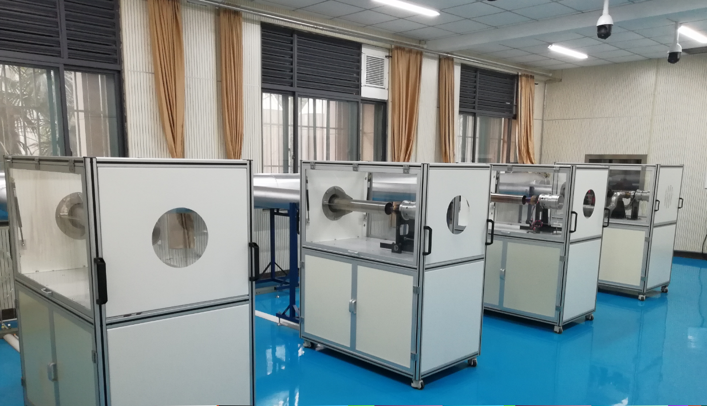
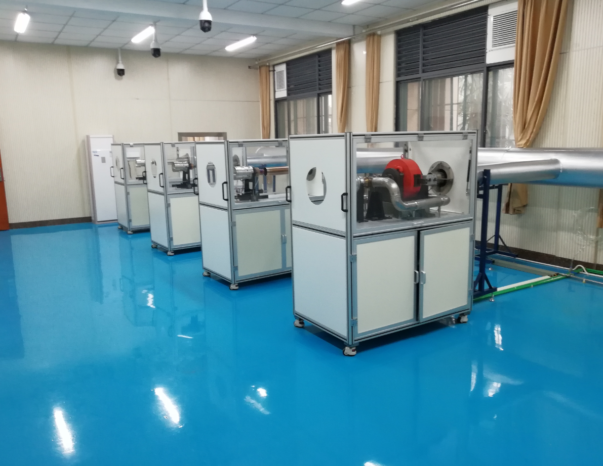
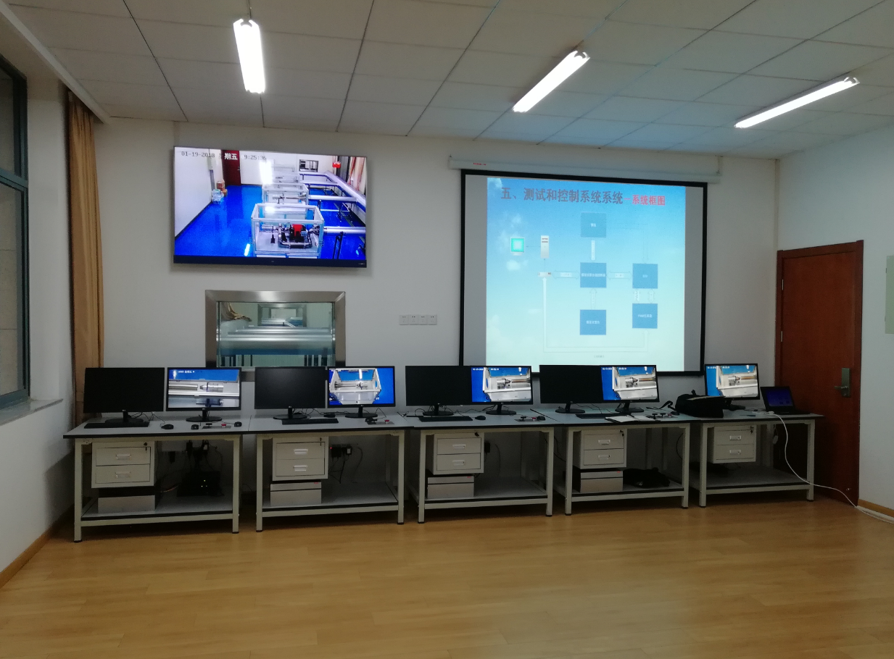

.
扬州西岐自动化科技有限公司作为专业研发发动机试车台等专用特殊高科技设备产品的公司，依托南京多所大学的各项资源，包括科研、教学、资金等资源，努力建设具有国际先进水平的微型发动机测试教研平台。
发动机试车台是将试验件、试验设备、传感器、以微型计算机为基础的测控系统、控制器与启动装置综合在一体的新技术，在发动机试验中用来测量相关参数、控制相关过程，实现发动机试验的参数采集、数据处理、过程控制、试验管理这一过程的智能化。航空发动机试验测试是新型发动机研制、定型，改进型优化的关键环节，进行试验测试就离不开发动机试车台的试验测试。航空发动机试验的特点是测量参数多，技术复杂、测试环节多、投资大、耗时长等。在每个阶段，还需要进行大量的零部件、整机和辅助系统的性能试验和结构强度试验，包括稳态性能、过渡态性能、失稳状态故障研究，以至一些寿命研究等。
该平台将提供给客户一个量身定制的、水平先进的、功能多用的微型发动机测试教研平台，将能够获得真正的信息化、自动化、智能化的科研教学过程，降低传统关于本领域教学研究的成本，将科研行为高效、透明。建设航空发动机整机综合仓新实验室，为飞行器动力工程专业学生提供通用整机创新实验平台，培养学生的自主设计能力和创新实践能力，培养其复杂产品意识和良好的科学素养，使其成为飞行器动力拔尖创新型人才。
我们的目标是在利用本公司现有的先进技术资源基础上、在南京多所大学高水平的要求引领下，未来的一到两年内能够一起打造具有国际先进水平的微型发动机测试教研平台。
现有各类发动机试车台图片：
电气部分
微型发动机测试间（预留一工位）
监控间实景